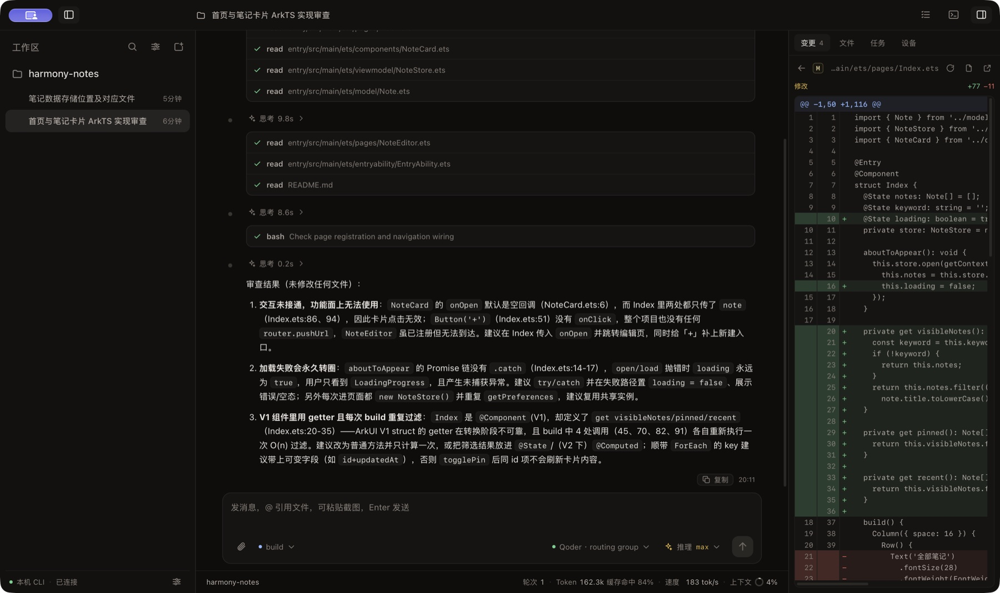
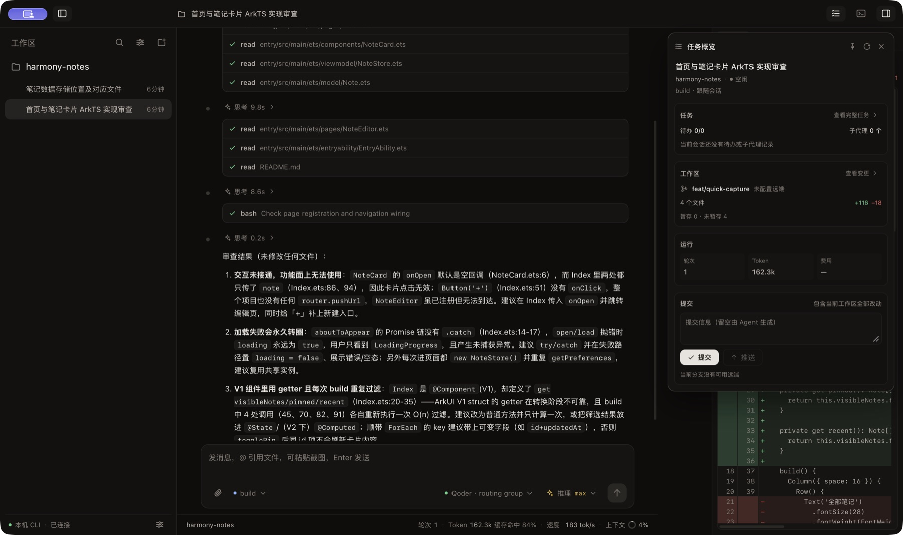
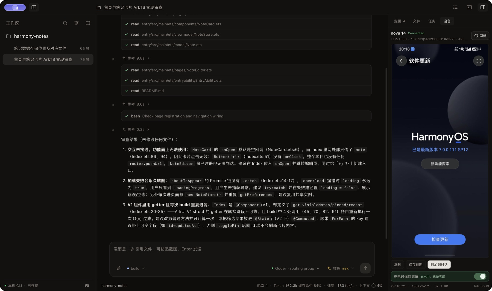
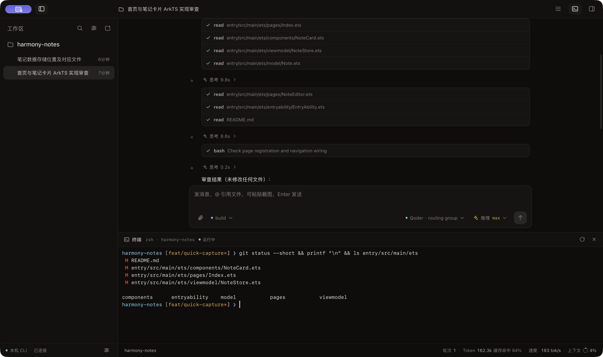

01 / WORKSPACE
项目在左，思路不散。
多工作区、会话搜索、排序与归档。每个项目有自己的上下文，每个会话都能快速找回。
macOS 12+ · 早期开发版
DevEco Code Desktop 把本机 DevEco Code CLI 变成一个专注的桌面工作区： 多工作区、流式对话、文件引用、任务变更和设备截图，在同一扇窗口里完成。

WHAT’S INSIDE
从打开项目到提交变更，关键动作都在视线范围内。
01 / WORKSPACE
多工作区、会话搜索、排序与归档。每个项目有自己的上下文，每个会话都能快速找回。
02 / CONVERSATION
流式 Markdown、思考耗时、工具调用聚合和子代理进度，长任务不再是一块黑箱。
03 / CONTEXT
直接引用工作区文件，支持图片与文本附件。文件由 CLI 读取，客户端不复制一份内容。
04 / TASKS
会话 diff、Git 状态、待办和子代理活动集中呈现。提交与推送是两个明确的动作。
05 / DEVICE
通过本机 HDC 抓取 HarmonyOS 设备截图，预览、保存，或直接附加到当前对话。
06 / NATIVE
菜单栏常驻、原生菜单、系统通知、窗口状态恢复、快捷键和全局右键菜单。关掉窗口，服务仍在。
REAL SCREENS
以下画面来自真实构建和本机 CLI，演示工作区为公开的 harmony-notes 项目。




THE LOOP
不重复造轮子，只把你每天要用的那一层做得顺手。
普通版自动探测 deveco，也可以手动选择路径；Offline 版内置固定版本 CLI。
选择项目、发送 prompt、批准权限，文件、diff 和任务都在同一条时间线上。
检查变更、审阅 diff、显式提交或推送。每一步都看得见，也停得下来。
GET STARTED
Apple Silicon 选择 aarch64，Intel 选择 x64。在 Releases 页面下载 DMG。
打开 DMG，将 DevEco Code 拖入“应用程序”。首次打开请右键选择“打开”。
普通版在终端安装 @deveco/deveco-code；Offline 版已包含 CLI，登录后即可使用。
BEFORE YOU GO
使用不需要。应用是社区构建，没有 Apple Developer ID 签名和公证；首次打开需要手动放行。
暂时不会。下载新版本 DMG，退出旧应用后覆盖安装即可；应用配置和会话数据通常会保留。
当前只验证 macOS。通知、窗口、菜单栏和 CLI 发现逻辑都针对 macOS 实现。
普通版不包含 CLI，安装包更小；Offline 版内置固定版本 CLI，适合不想另外安装 CLI 的机器。两者仍需网络登录和调用模型。